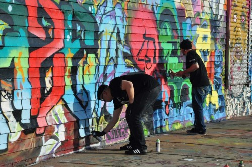

1
1jquery carousel by JuanDavid
Los presidentes de Colombia y Estados Unidos se encontrarán en la Asamblea General de Naciones Unidas en Nueva York con el objetivo de avanzar en las relaciones bilaterales a la lucha contra el narcotráfico., informó este viernes el mandatario Juan Manuel Santos.
"El 19 de septiembre, cuando asista a mi última asamblea general @UN, me reuniré con @POTUS para continuar avanzando en relación bilateral", escribió en Santos su cuenta de Twitter.
por: Redacción Politica.
La exguerrilla de la Farc en tránsito hacia partido político, hizo un llamado al país en aras de fortalecer la implementación de los acuerdos de La Habana.
Jorge Torres, conocido como Pablo Catatumbo, afirmó estar dispuesto a reunirse con el expresidente Álvaro Uribe, principal crítico de lo pactado con esa organización en Cuba. Señaló, que los odios deben superarse en este momento histórico para Colombia.
por: Redacción Politica.
ELN admite que mató a un secuestrado ruso.
por: Redacción Politica.
Esta es la dirección del nuevo partido político de las Farc.
por: Redacción Politica.
Kim Jong-Un supervisó bomba H para misil norcoreano
por: Aagencias AFP y EFE.
Justicia de EE.UU. confirma que no hay pruebas de que Obama haya intervenido teléfonos de Trump.
El viaje comenzará en Bogotá el 7 de septiembre:
Esta sería la agenda del papa Francisco en Bogotá
El viernes 8 de septiembre: Villavicencio
Misa papal en Villavicencio será para 400.000 personas
El santo padre estará en Villavicencio. En esta ciudad, a las 9:00 a. m., celebrará una santa misa.
El sábado 9 de septiembre: Medellín
Visita del papa Francisco le dejará a Medellín 22 millones de dólares
El papa Francisco visitará la capital antioqueña. Oficiará eucaristía a las 10:00 a. m. en el aeropuerto Olaya Herrera.
El domingo 10 de septiembre, : Cartagena
La prioridad del Papa Francisco estará en Cartagena, donde hará una oración del Ángelus en el santuario de San Pedro de Claver.
En el Caribe terminará la cita del santo padre.
por: Redacción ELTIEMPO.COM
Cali salió por la puerta grande por segundo fin de semana consecutivo, pero dejó serias du-
das sobre todo en la primera mitad, en la que tuvo una generación de juego deficiente. Fue hasta el último minuto de los 45 iniciales cuando una viveza de Nicolás Benedetti y una serie de imprecisiones de la defensa leoparda, le abrió la oportunidad al conjunto azucarero de abrir el marcador.
por: ESPN.
Cien muros de Medellín, cien artistas urbanos y escritores de grafiti dan color a las paredes blancas y grises de la ciudad para convertir las calles en un centro cultural que todos habiten.

¡Que los espacios neutros tengan color, los muros vida y las calles artistas y espectadores que las habiten! No hay techos, puertas o paredes que hagan del arte un bien que está bajo llave, sino andenes, calles y carreteras que conducen a las creaciones de artistas urbanos que encuentran en las construcciones de la ciudad el mejor lienzo para plasmar sus pensamientos. Pensamientos sin censura, sin barreras ni distinciones, porque la calle es el lugar que habitan todos.